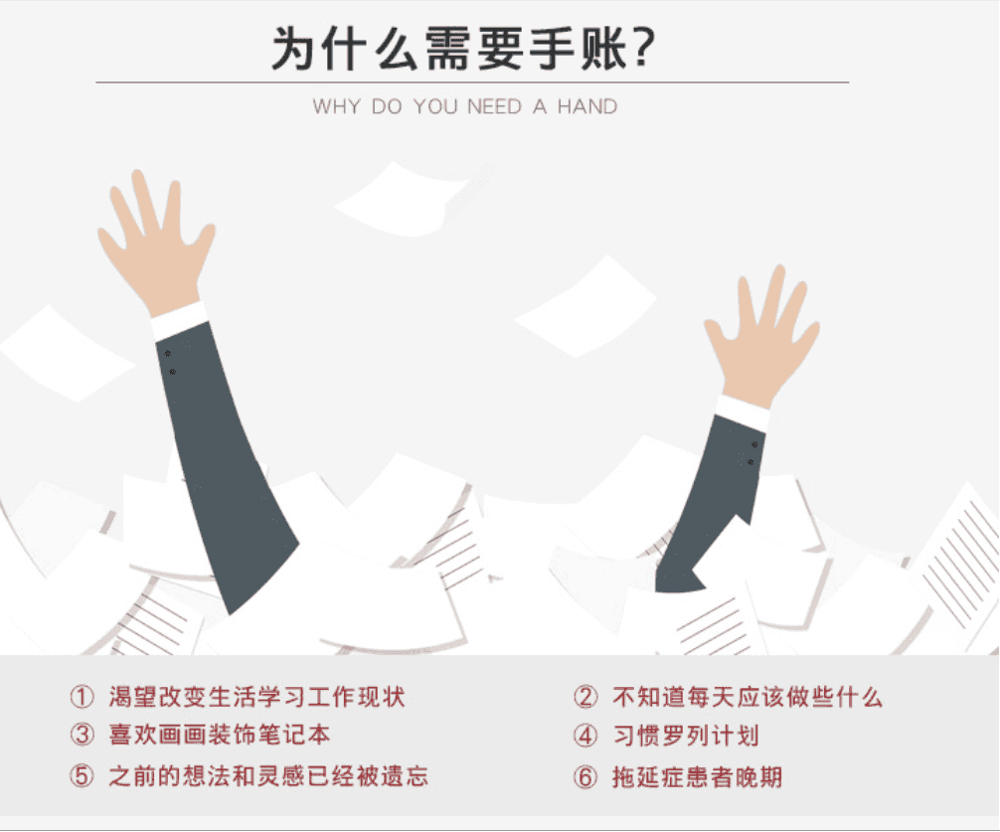
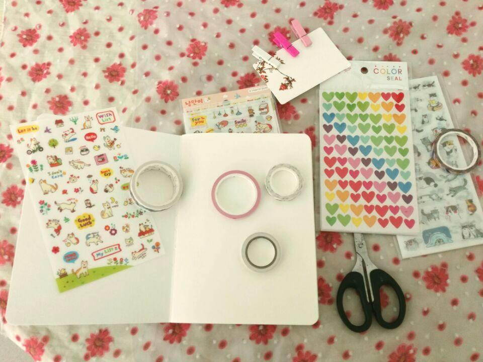
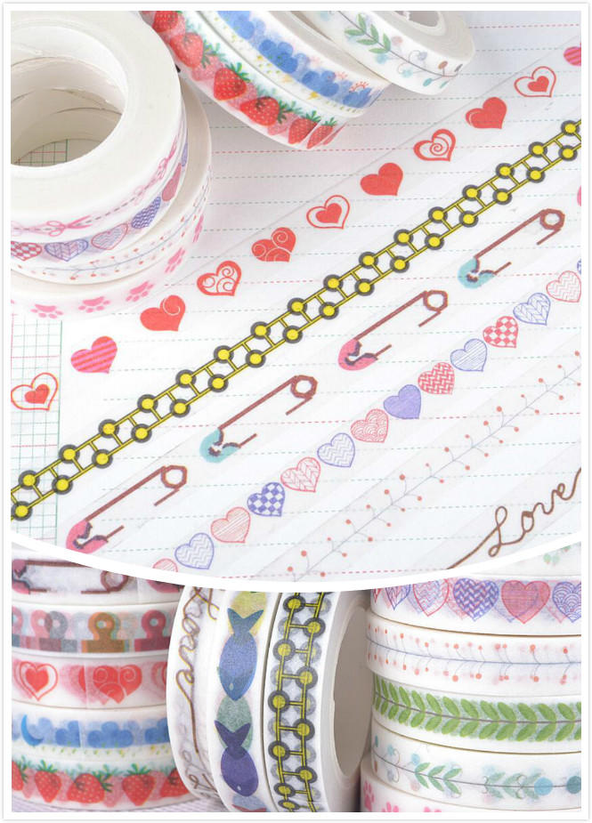
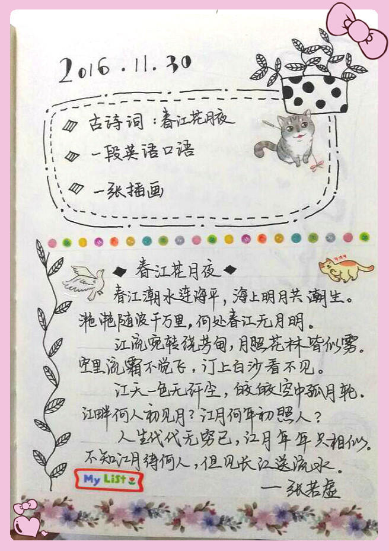

10分钟掌握手帐入门技能
有人说一入手帐深似海，从此笔纸要随行。
在日本，很多人都会随身带着一个被称为“手帐”的笔记本，随时随地掏出来翻翻看，手帐对于日本人而言是不可或缺的生活用品，不仅具有备忘功能，而且是进行人生规划的一个重要工具。
手帐不仅提醒自己记着家人、朋友的生日和约会，还能安排每天的工作，很多人甚至把它当做简短的日记本。
长期的写手帐，会让我们懂得如何去坚持，也许很多做不到的事情，就可以从画手帐中开悟，坚持不懈是最好的精神品质。
手帐的存在的意义:
①把你脑袋里混乱的计划和想法记录下来，把大脑清空，专注于眼前的事情。
②记录生活。
说了那么多意义，都不如自己动手体验一番，你觉得呢？
下面有图有真相，一起动手做起来吧~
X宝有很多漂亮的素材，如果你打算入坑，可以选一选，总有让人惊艳的一款。
一切准备就绪就可以开始了：
1、手帐本可以买走线合订本，也可以是活页，活页画废了，可以撕下来，但是我喜欢合订的感觉。
2、胶带有很多用处，可以用来装饰、走边。做外围的走边时，注意用剪刀裁剪好边缘。
3、萌萌的贴纸记得多买点，尤其是图小颜色鲜亮的贴纸，不想画就贴吧，哈哈。
4、做手帐一定记得把手洗干净。(*^__^*)
首先设计好封面；
再涂一涂，贴一贴，一张手帐页面诞生了~
这样萌萌的画面，总想多翻阅几次，会不会多翻阅几次，单词就背熟了？
手帐有绘本手帐、主题手帐、日程手帐等。主题手帐有育儿手帐，讲述育儿成长史；有梦想手帐，记录自己的心路历程；有美食手帐，吃货都想与人分享；有旅行手帐，让流浪的心有个地方可以安放.....这么多主题，总有一款适合你。
当然，在工作中，我们用的多还是日程手帐，工作重点，主要事件，主次划分、会议纪要、一天收获......太多东西需要记录和整理。
如果你的绘画功底不算太好，可以尝试多用贴图，花边胶。只要用心做，你也会拥有一段快乐的慢时光。
年老时，摸过的一本本手册，它们就是你的个人传记，你的编年史。
为了纪念你那闪闪发光的过去，给自己写本传记吧，让未来的你感谢现在的自己。